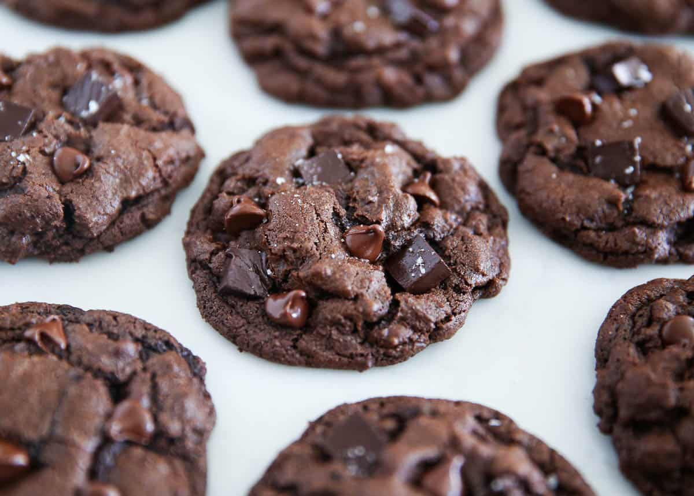

Chocolate Cookies

Chocolate Chip Cookies
Experience the irresistible allure of our Chocolate Cookies recipe. Crafted with meticulous precision, these delectable treats promise a symphony of flavors and textures. Baked to golden perfection, each bite unveils a perfect balance of sweetness and richness. An effortless delight for any occasion, these cookies are sure to satisfy your chocolate cravings with every indulgent nibble.
Ingredients
- 1 ½ cups white sugar
- 1 cup butter, softened
- 2 eggs
- 2 teaspoons vanilla extract
- 2 cups all-purpose flour
- ⅔ cup cocoa powder
- ¾ teaspoon baking soda
- ¼ teaspoon salt
- 2 cups semisweet chocolate chips
- ½ cup chopped walnuts (Optional)
Steps
- Preheat the oven to 350 degrees F (175 degrees C).
- Beat sugar, butter, eggs, and vanilla in a large bowl until light and fluffy.
- Combine flour, cocoa powder, baking soda, and salt in another bowl; stir into butter mixture until well blended. Mix in chocolate chips and walnuts. Drop spoonfuls of dough 2 inches apart onto ungreased cookie sheets.
- Bake in the preheated oven just until set, 8 to 10 minutes. Cool slightly on the cookie sheets before transferring to wire racks to cool completely.